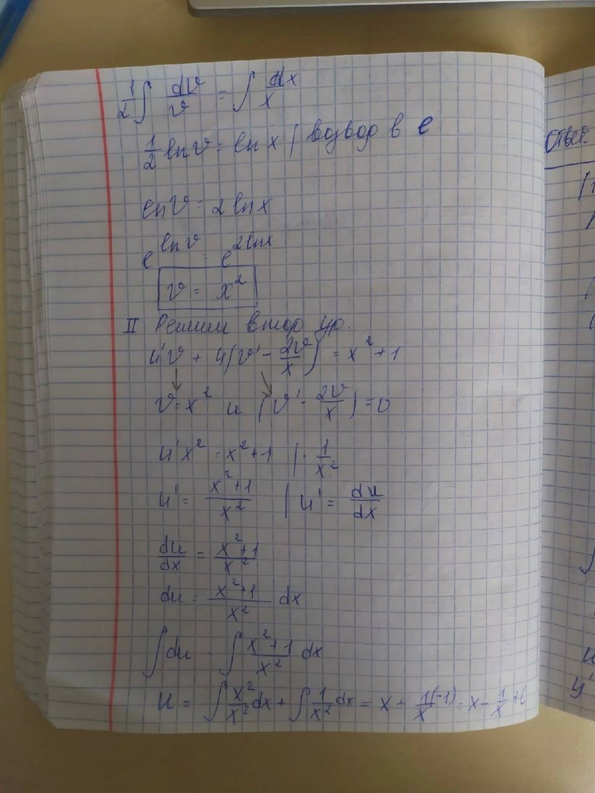
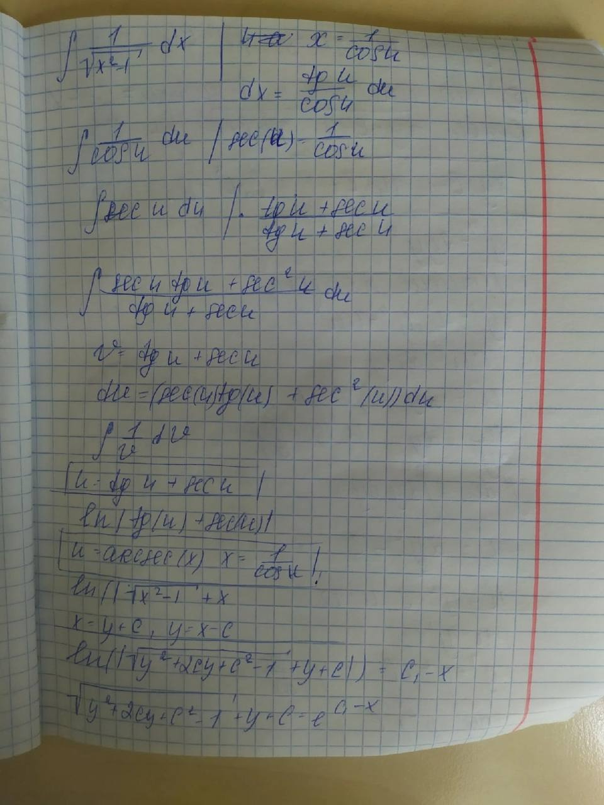
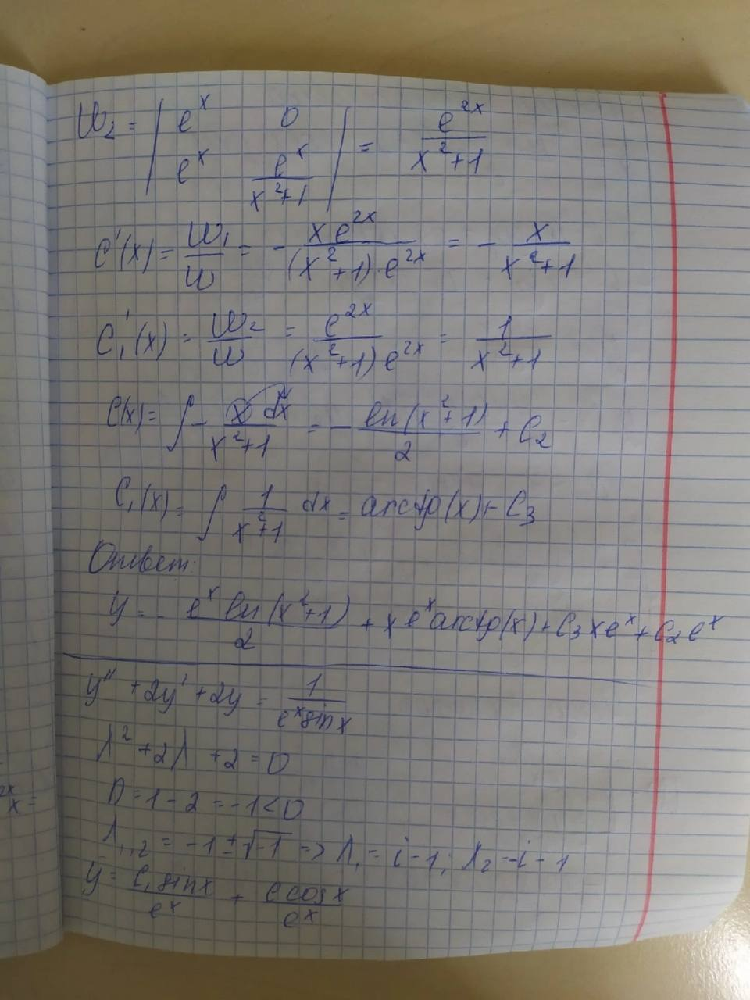

Интегралы
Площади
Ряды
Дифуры
Интегралы
\cdot dx})
Процесс
интегрирования можно упростить, если сделать замену переменных:

Тогда
исходный интеграл
можно записать так:
∫
4·t·cos(t)·dt
∫4·x·cos(x)·dx
Формула интегрирования по частям:
∫U(x)·dV(x) = U(x)·V(x) - ∫V(x)·dU(x)
Исходный интеграл представим как:
4·∫x·cos(x)·dx
Найдем:
∫x·cos(x)·dx
а затем результат домножим на 4
Положим:
U=x
dV=cos(x)·dx
Тогда:
dU=dx
V=sin(x)
Поэтому:
∫x·cos(x)·dx=x·sin(x)-∫sin(x)·dx
Находим интеграл:
∫sin(x)·dx
∫sin(x)·dx=-cos(x)
В итоге получаем:
∫x·cos(x)=x·sin(x)+cos(x)+C
С учетом коэффициента 4, получаем
4·x·sin(x)+4·cos(x)
Чтобы записать окончательный ответ, осталось вместо t подставить x/2.
%2B4\cdot cos\left(\frac{x}{2} \right)%2BC)
Вычислим
определенный интеграл:
\cdot dx}) =
=
%2B4\cdot cos\left(\frac{x}{2} \right) \right)|\limits_{0}^{\frac{\pi}{2}}) =
= =
=
Процесс
интегрирования можно упростить, если сделать замену переменных:
Тогда
исходный интеграл
можно записать так:
∫4·t·cos(t)·dt
∫4·x·cos(x)·dx
Формула интегрирования по частям:
∫U(x)·dV(x) =
U(x)·V(x) - ∫V(x)·dU(x)
Исходный интеграл представим как:
4·∫x·cos(x)·dx
Найдем:
∫x·cos(x)·dx
а затем результат домножим на 4
Положим:
U=x
dV=cos(x)·dx
Тогда:
dU=dx
V=sin(x)
Поэтому:
∫x·cos(x)·dx=x·sin(x)-∫sin(x)·dx
Находим интеграл:
∫sin(x)·dx
∫sin(x)·dx=-cos(x)
В итоге получаем:
∫x·cos(x)=x·sin(x)+cos(x)+C
С учетом коэффициента 4, получаем
4·x·sin(x)+4·cos(x)
Чтобы записать окончательный ответ, осталось вместо t подставить x/2.
Вычислим
определенный интеграл:
\cdot dx}=\left(2\cdot x\cdot sin\left(\frac{x}{2} \right)%2B4\cdot cos\left(\frac{x}{2} \right) \right)|\limits_{0}^{\pi}=2\cdot \pi-4=2\cdot \pi-4)
∫x·e-x·dx
Формула интегрирования по частям:
∫U(x)·dV(x)= U(x)·V(x) - ∫V(x)·dU(x)
Положим:
U=x
dV=e-x·dx
Тогда:
dU=dx
V=-e-x
Поэтому:
∫x·e-x·dx=-x·e-x-∫(-e-x)·dx=-x·e-x+∫e-x·dx
Находим интеграл:
∫e-x·dx
∫e-x·dx=-e-x
В итоге получаем:
∫x·e-x=-x·e-x-e-x+C
или
∫x·e-x=-(x+1)·e-x+C
Вычислим определенный интеграл:
∫01x·e-x·dx=(-(x+1)·e-x)|01=-2·e-1-(-1)=1-2·e-1
Интегралы
В начало документа

Площади
В начало документа
Ряды
В начало документа

Дифуры
В начало документа


